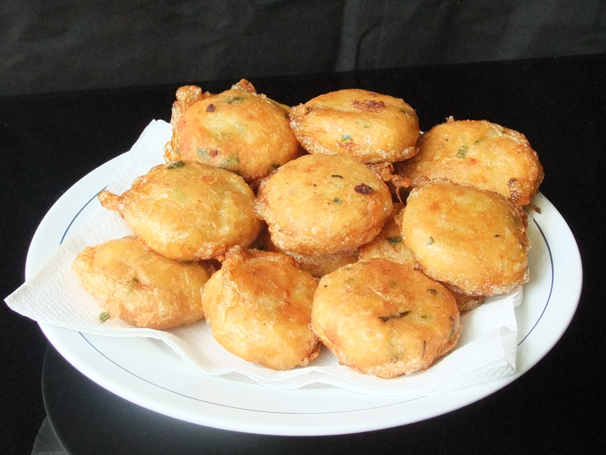

Home
Indonesian Potato Fritter

Photo by Midori, license CC BY-SA 3.0
Crispy on the outside and soft inside, these potato fritters are made from mashed ptatoes mixed with spices, then deep-fried until golden. A popular comfort snack or side dish in Indonesia.
Recipes:
- 500 g potatoes, peeled and boiled
- 2 cloves garlic, minced
- 2 spring onions, finely sliced
- 1 egg (half for mixture, half for coating)
- 1/2 tsp ground white pepper
- 1 tsp salt
- 2 tbsp fried shallots (optional)
- Cooking oil for frying
Steps:
- Mash the boiled potatoes until smooth.
- Mix in garlic, spring onions, half of the beaten egg, pepper, salt, and fried shallots.
- Shape the mixture into small patties.
- Dip each patty in the remaining beaten egg.
- Heat oil in a rying pan over medium heat.
- Fry until both sides are golden brown. Drain and serve warm.